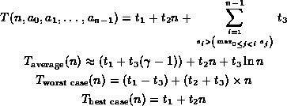

Data Structures and Algorithms
with Object-Oriented Design Patterns in Java
Data Structures and Algorithms
with Object-Oriented Design Patterns in Java
In Section  we derived the average running
time of Program which finds the largest element of an array.
In order to do this we had to determine the probability that a certain
program statement is executed.
To do this, we made an assumption about
the average input to the program.
we derived the average running
time of Program which finds the largest element of an array.
In order to do this we had to determine the probability that a certain
program statement is executed.
To do this, we made an assumption about
the average input to the program.
The analysis can be significantly simplified if we simply wish
to determine the worst case running time.
For Program ,
the worst-case scenario occurs when line 8 is executed in every iteration
of the loop.
We saw that this corresponds to the case in which the input array is
ordered from smallest to largest.
In terms of Equation ,
this occurs when .
Thus, the worst-case running time is given by

Similarly, the best-case running time occurs when line 8 is never executed. This corresponds to the case in which the input array is ordered from largest to smallest. This occurs when and best-case running time is
In summary we have the following results for the running time of
Program :

 Copyright © 1998 by Bruno R. Preiss, P.Eng. All rights reserved.
Copyright © 1998 by Bruno R. Preiss, P.Eng. All rights reserved.